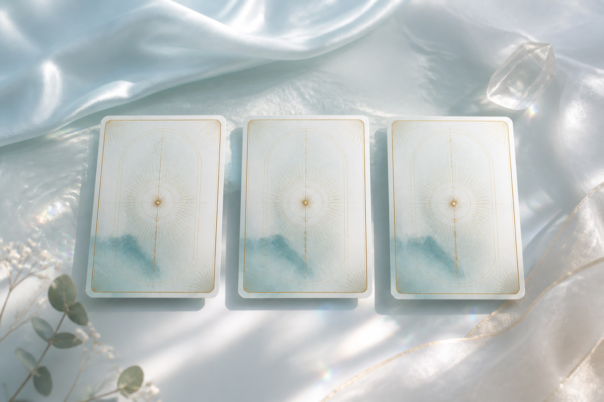
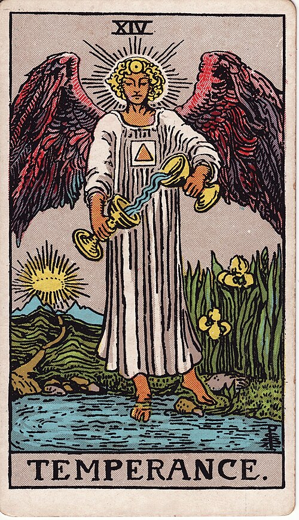

Name
We clarify the question, the pressure around it, and the pattern that has been taking up space.
Private tarot reading + angel-led reflection
A private session with Kasey Goldstraw for the decision, transition, creative threshold, or question that wants a clearer mirror. Tarot becomes a mirror for what is active now, with angel-led reflection and grounded integration so you can meet the next step without pressure or fixed-future prediction.
Free 3-card pull · $19 short video reading · private sessions from $111
Pattern-first readingsName what is active before rushing the answer
No prediction pressureReflective guidance, not fate or fear
Integration includedLeave with language and a grounded next step
For the moment when
The cards may be saying something, your body may be saying something else, and the question still follows you into the rest of the day.
The Clear Field method
This is not a psychic prediction or a performance of certainty. Each session begins with your question, context, and intention, then uses tarot as a reflective framework for themes, possibilities, and next-step clarity.
We clarify the question, the pressure around it, and the pattern that has been taking up space.
The spread reflects what is active now: the root, the mirror, the movement, and the choices still in your hands.
The closing conversation helps you gather the useful pieces into one grounded next step.

Free Clear Field Reflection
Choose an intention, pull a Root / Mirror / Movement spread, and receive the first layer free. If the cards land, you can get a short personalized video reading of the exact spread you pulled.
$19 Personalized Card Reading Video
The free pull gives you the first layer. If the spread feels worth sitting with, Kasey can record a short private video reading of the exact three cards you pulled: the pattern, the part worth noticing, and one grounded next step.
Root, Mirror, and Movement are read in the context of the question you asked.
Short enough to act on, specific enough to feel personal.
Use it on its own, or bring it into a live $111 or $333 session if the question wants more room.
 Root
Root

Mirror Movement
Movement
What stands out, what it may be asking of you, and the next honest step.

With Kasey Goldstraw
Kasey brings years of intuitive and reflective practice to True to You Tarot, shaped by the wider Tranquility Wellness ecosystem of meditation, angelic guidance, reflective ritual, and grounded integration.
In True to You Tarot, the cards are a mirror, not a verdict. The session can name patterns, pressures, and possibilities, while you remain the authority in your life and choices.
Past clients often describe Kasey's presence as compassionate, supportive, thoughtful, and rich with insight.
Private sessions
Begin with the free pull, add a short video reading if you want Kasey's quick take, or book a private session when the question needs live conversation.
Use the free Root / Mirror / Movement spread to name the first layer.
Add a short personalized video reading of the cards you pulled for $19.
Choose a live focused reading or the signature session if the question needs more space.
Quick Take · Personalized Card Reading Video
2 minute private video
Best when the free cards landed and you want Kasey's quick take.
Focused Entry · Focused Angel Reading
30 minute private session
Best for one question that needs a calm read and one usable next step.
Signature · Angel-Led Tarot Reading
75-90 minute private session
Best for a repeating theme, transition, creative threshold, or question that needs more context.
Reflective spiritual guidance only. No predictions, diagnoses, guarantees, or promised outcomes.
Before booking, you will see session format, availability, payment details, and cancellation terms.
Before you book
No. The session is designed for spiritual insight, reflection, and choice. It may explore themes and possibilities, but it does not promise a fixed future, guaranteed result, or specific outcome.
The $111 Focused Angel Reading is a 30-minute session for one clear question. The $333 Signature Angel-Led Tarot Reading gives the question more space, with intake, a custom spread, guided reflection, integration, and a written Clarity Map within 72 hours.
No. Sessions are spiritual and reflective in nature. They are not therapy, medical care, legal advice, financial advice, or any other licensed professional service.
Bring one meaningful question, a quiet space, and any context you want Kasey to understand. You never have to share more than feels appropriate.
True to you, guided from within